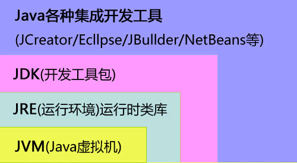

首页 > Java教程 > Java入门基础及环境搭建
Java中JVM、JRE和JDK三者有什么区别和联系？
任何语言或者软件的运行都需要环境。就像人要生活在空气中，鱼要活在水中，喜阴植物就不能放在阳光下暴晒一样，任何对象个体的存在都离不开其所需要的环境，编程语言亦是一样的。
Java 语言的开发运行，也离不开 Java 语言的运行环境 JRE。没有 JRE 的支持，Java 语言便无法运行。当然，如果还想编译 Java 程序，搞搞小开发的话，JRE 是明显不够了，这时候就需要 JDK。
其实啊，JDK 就是 JRE 加上一些常用工具组成的。JDK 不仅能运行已经被编译好了的 Java 程序，还能支持我们编译 Java 程序（JDK=JRE+各种工具）。
在《JVM及Java跨平台原理》一节中，我们学习了 Java 虚拟机 JVM。那么 JDK，JVM 和 JRE，那他们三个有什么区别呢？又有什么联系呢？如果你学到这里产生这样一个疑问，我想说，你到目前为止，学的很不错！那现在为你们整理一下三者的关系和区别吧：
所以说大家看出来三者的关系了吗？其实如下图所示：

由图中可以看出以下几点：
Java 语言的开发运行，也离不开 Java 语言的运行环境 JRE。没有 JRE 的支持，Java 语言便无法运行。当然，如果还想编译 Java 程序，搞搞小开发的话，JRE 是明显不够了，这时候就需要 JDK。
其实啊，JDK 就是 JRE 加上一些常用工具组成的。JDK 不仅能运行已经被编译好了的 Java 程序，还能支持我们编译 Java 程序（JDK=JRE+各种工具）。
在《JVM及Java跨平台原理》一节中，我们学习了 Java 虚拟机 JVM。那么 JDK，JVM 和 JRE，那他们三个有什么区别呢？又有什么联系呢？如果你学到这里产生这样一个疑问，我想说，你到目前为止，学的很不错！那现在为你们整理一下三者的关系和区别吧：
- JDK（Java Development Kid，Java 开发开源工具包），是针对 Java 开发人员的产品，是整个 Java 的核心，包括了 Java 运行环境 JRE、Java 工具和 Java 基础类库。
- JRE（Java Runtime Environment，Java 运行环境）是运行 JAVA 程序所必须的环境的集合，包含 JVM 标准实现及 Java 核心类库。
- JVM（Java Virtual Machine，Java 虚拟机）是整个 Java 实现跨平台的最核心的部分，能够运行以 Java 语言写作的软件程序。
所以说大家看出来三者的关系了吗？其实如下图所示：

由图中可以看出以下几点：
- JDK=JRE+多种Java开发工具
- JRE=JVM+各种类库
- 这三者的关系是一层层的嵌套关系。JDK>JRE>JVM
关注公众号「站长严长生」，在手机上阅读所有教程，随时随地都能学习。内含一款搜索神器，免费下载全网书籍和视频。

微信扫码关注公众号